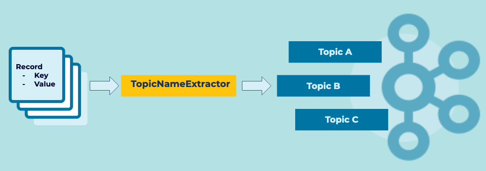

Event Router
Event Streams may contain Events which can be separated logically by some attribute. The routing of Events to dedicated Streams may allow for simplified Event Processing and Event Sink solutions.
Problem
How can I isolate Events into a dedicated Event Stream based on some attribute of the Events?
Solution

Implementation
With ksqlDB, continuously routing events to a different stream is as simple as using the CREATE STREAM syntax with the appropriate WHERE filter.
CREATE STREAM actingevents_drama AS
SELECT NAME, TITLE
FROM ACTINGEVENTS
WHERE GENRE='drama';
CREATE STREAM actingevents_fantasy AS
SELECT NAME, TITLE
FROM ACTINGEVENTS
WHERE GENRE='fantasy';
If using Kafka Streams, the provided TopicNameExtractor interface can redirect events to topics. The TopicNameExtractor has one method, extract, which accepts three parameters:
- The event key
- The event value
- The RecordContext, which provides access to headers, partitions, ando ther contextual information about the event.
You can use any of the given parameters to return the destination topic name, and Kafka Streams will complete the routing.
GenreTopicExtractor implements TopicNameExtractor<String, String> {
String extract(String key, String value, RecordContext recordContext) {
switch (value.genre) {
case "drama":
return "drama-topic";
case "fantasy":
return "fantasy-topic";
}
}
}
KStream<String, String> myStream = builder.stream(...);
myStream.mapValues(..).to( new GenreTopicExtractor());
Considerations
- Event Routers should not modify the Event contents and instead only provide the proper Event routing.
References
- This pattern is derived from Message Router in Enterprise Integration Patterns by Gregor Hohpe and Bobby Woolf
- See this Kafka Tutorial for a full example of dynamically routing events at runtime